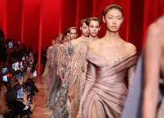

Nueva Línea de Primavera de Maison Laurent Cautiva en París

París, 10 de junio de 2024. La renombrada casa de moda francesa, Maison Laurent, ha lanzado su nueva línea de primavera en un espectacular desfile celebrado en los Jardines de Luxemburgo. La colección, diseñada por la aclamada directora creativa Sophie Dubois, ha recibido elogios por su delicadeza, innovación y compromiso con la sostenibilidad, reafirmando el estatus de Maison Laurent como pionera en el mundo de la moda.
Detalles del Desfile
El desfile, que atrajo a una audiencia selecta de celebridades, influenciadores y críticos de moda, fue un evento deslumbrante que capturó la esencia de la primavera. La colección presenta una paleta de colores pastel, estampados florales y telas ligeras, perfectas para la temporada. Las prendas varían desde vestidos etéreos y faldas vaporosas hasta blusas delicadas y accesorios únicos.
Sophie Dubois, conocida por su capacidad para fusionar lo clásico con lo contemporáneo, expresó su inspiración para la colección: "Quería crear una línea que celebrara la renovación y la belleza de la primavera, utilizando materiales sostenibles y técnicas tradicionales que honran nuestra herencia."
Enfoque en la Sostenibilidad
Una característica sobresaliente de la nueva línea es su énfasis en la sostenibilidad. Maison Laurent ha trabajado con proveedores locales y certificados para asegurar que todas las telas sean orgánicas y reciclables. Además, la producción de la colección se llevó a cabo con prácticas que minimizan el impacto ambiental y promueven la responsabilidad social.
"Estamos comprometidos con un futuro más verde y responsable," declaró Pierre Dupont, CEO de Maison Laurent. "Nuestra nueva línea de primavera refleja este compromiso, ofreciendo moda que es tan ética como elegante."
Reacciones y Expectativas
Las reacciones a la colección han sido extremadamente positivas.
"La nueva línea de primavera de Maison Laurent es una obra maestra de elegancia y sostenibilidad," escribió la crítica de moda de Vogue, Anna Wintour.
"Sophie Dubois ha capturado la magia de la primavera con una colección que es tan hermosa como responsable."
Los clientes y seguidores de la marca han mostrado su entusiasmo en las redes sociales, anticipando una alta demanda para las nuevas piezas.
Las boutiques de Maison Laurent en todo el mundo están listas para el lanzamiento, con listas de espera formándose rápidamente para las prendas más codiciadas.